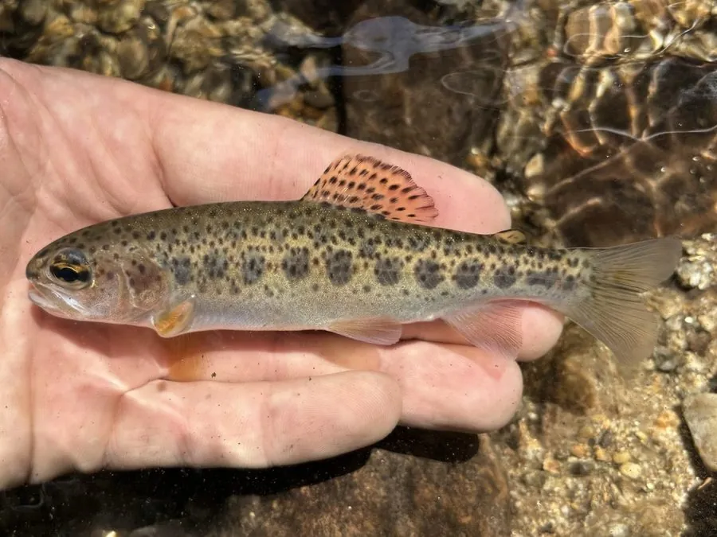

鱼类 · 动物界
虹鳟 Oncorhynchus mykiss

原产北美、体侧有彩虹光泽条纹的冷水鱼，养殖历史超过百年，是中国重要的冷水养殖鱼类，但在多国被列为入侵物种。
- 分类
- 门脊索动物门纲硬骨鱼纲目鲑形目科鲑科属太平洋鲑属
- 栖息环境
- 清澈、低温、溶氧充足的山溪、河流和湖泊，适宜水温 10–18 ℃
- 地理分布
- 原产北美太平洋沿岸，全球广泛引种养殖，中国多地有养殖和逃逸种群
- 保护级别
- 暂无评估；中国未列入国家重点保护野生动物名录（重要养殖鱼类）
物种志
虹鳟体呈纺锤形、稍侧扁，背部青绿或橄榄色，体侧银白，从鳃盖一直延伸到尾柄有一条宽大的粉红色或紫红色纵带，像彩虹一样，因此得名。体侧以及背鳍、尾鳍上散布着细小的黑色斑点。成鱼体长一般 30–60 cm，体重 0.5–2 kg，养殖个体可超过 60 cm。
虹鳟原产北美太平洋沿岸，从阿拉斯加到墨西哥西北部的溪流和湖泊，是典型的冷水鱼，适宜水温 10–18 ℃，要求水体清澈、溶氧充足。它食性偏肉食，捕食水生昆虫、甲壳类、小鱼和鱼卵，也吃部分植物性食物。繁殖期在冬季至早春，雌鱼在砾石河床上挖坑产卵，每尾可产数千粒卵。1874 年起虹鳟被引入世界各地养殖，如今是重要的冷水养殖鱼类；中国自 1959 年引进，在东北、西北和西南的冷水资源中养殖。部分逃逸个体在自然水域建立了野外种群，因此它在国际上被列入“全球百大入侵物种”名单。目前它没有IUCN 的正式评估，中国未将其列入国家重点保护野生动物名录。
形态与习性
- 食性肉食偏杂食，捕食水生昆虫、甲壳类、小鱼和鱼卵
- 体长一般 30–60 cm，养殖个体可超过 60 cm
- 体重常见 0.5–2 kg
- 寿命约 6–8 年
- 繁殖冬季至早春在砾石河床挖坑产卵，每尾可产数千粒
- 水温适宜水温 10–18 ℃，要求溶氧充足
趣味知识
- 体侧的粉红色纵带像彩虹一样闪亮，虹鳟的名字由此而来。
- 虹鳟是较早被成功人工养殖的鲑科鱼类，养殖历史已超过 140 年。
- 虹鳟被列入“全球百大入侵物种”，逃逸个体可能挤压本土鱼类的生存空间。